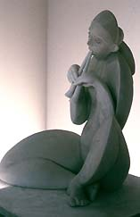

| Zelli Porcelain
sponsors contemporary British design award for second year
(Press release)
Zelli
Porcelain, a leading independent specialist in figurative
porcelain announces the second year of the Zelli Porcelain Award.
Following the success of the inaugural award last year, Zelli has
chosen the theme of Ovid’s Metamorphoses for aspiring British
porcelain artists to interpret. This is an entirely privately funded
award, whose purpose to promote the use of porcelain as an art medium
and to raise the awareness of previously untapped talent of British
porcelain artists.
The gallery celebrated its 50th anniversary last year and has long
been associated with sourcing new artists and offering the widest
collection of figurative porcelain in London from such renown European
houses, including Meissen, Nymphenburg, and Hutschenreuther amongst
others.
 The
range of work available includes the more traditional Meissen monkey
orchestra, the art deco mood is caught with an aerodynamic desk
set from Höchst, the vibrant hues of Dresden’s parrots,
through to the work of competitors from last year’s award,
including Eleanor Bartleman’s and Leslie Martin’s. This
treasure trove at the end of Dover Street offers the perfect illustration
that porcelain is an affordable luxury for all tastes and budgets. The
range of work available includes the more traditional Meissen monkey
orchestra, the art deco mood is caught with an aerodynamic desk
set from Höchst, the vibrant hues of Dresden’s parrots,
through to the work of competitors from last year’s award,
including Eleanor Bartleman’s and Leslie Martin’s. This
treasure trove at the end of Dover Street offers the perfect illustration
that porcelain is an affordable luxury for all tastes and budgets.
Penelope Higham, the proprietor of Zelli Porcelain, commenting
on the award, said: “Zelli is proud to uncover the talent
of British porcelain artists and show the public the versatility
of this medium as an art form. Porcelain has been for too long the
Cinderella of the art world.”
More Articles
|